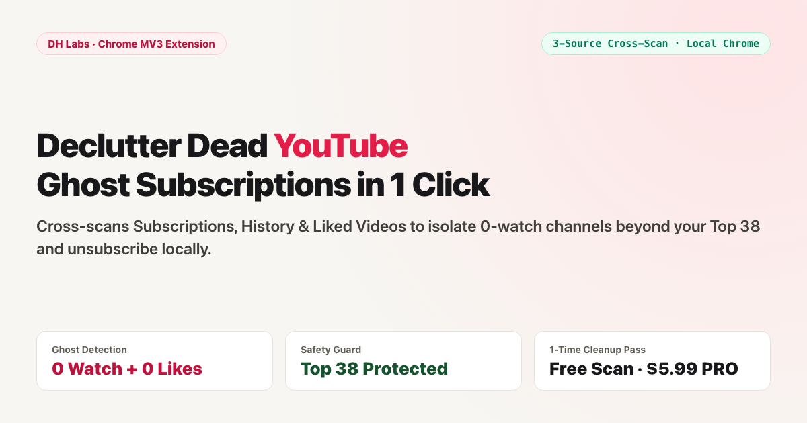
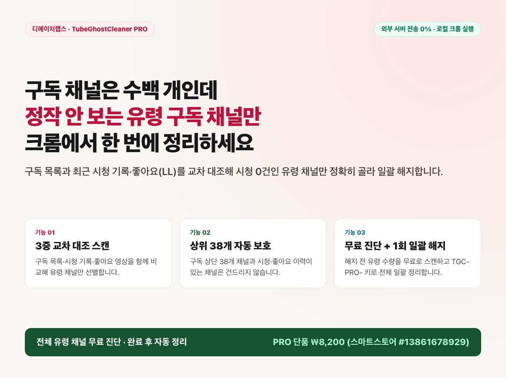
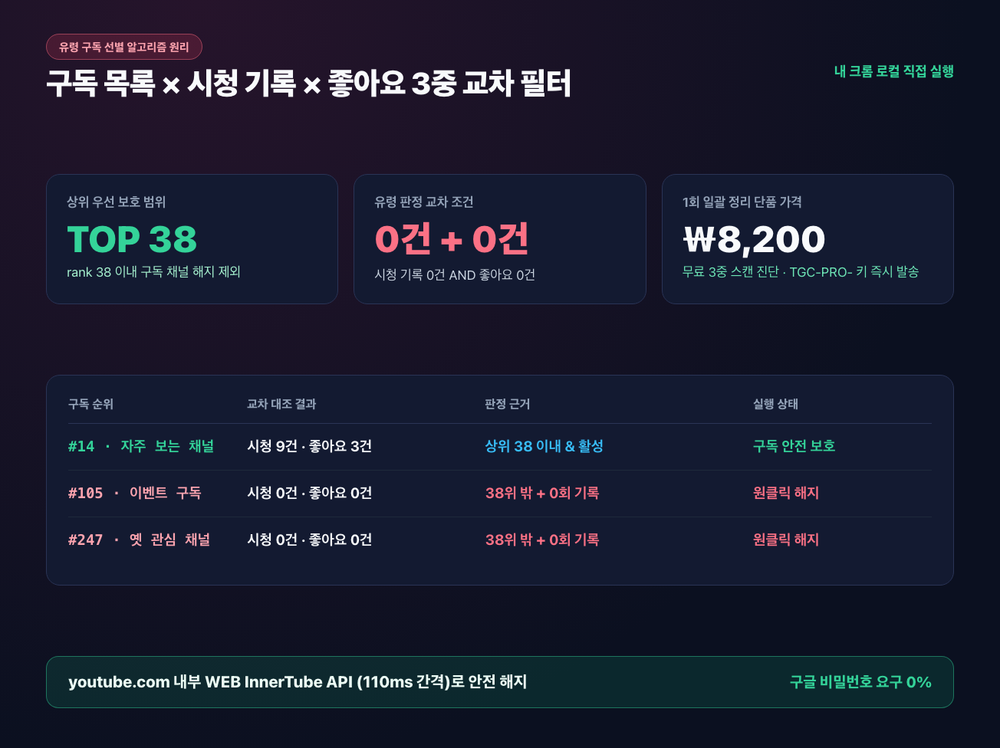
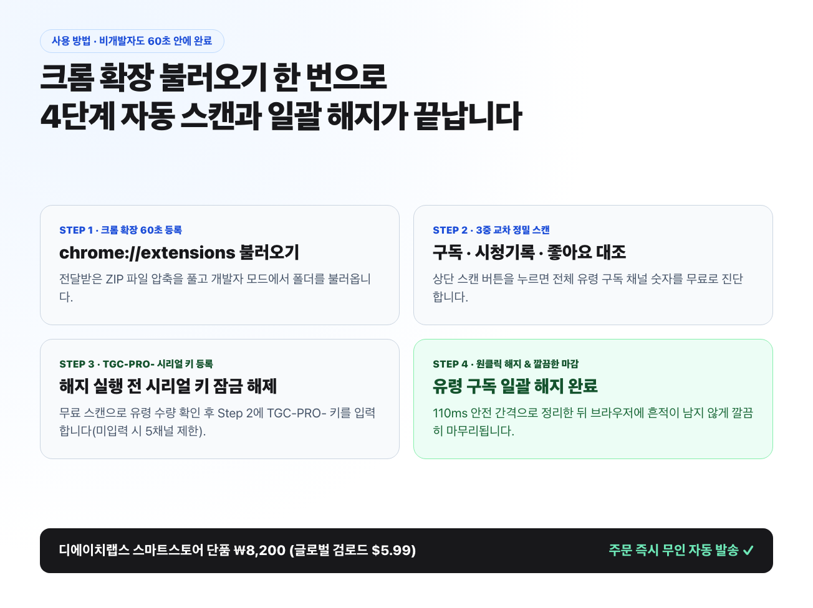

구독 채널은 수백 개인데
정작 안 보는 유령 구독만
크롬에서 한 번에 정리하세요.
구독 목록(/feed/channels), 시청 기록(/feed/history), 좋아요 목록(LL)을 내 브라우저 안에서 교차 대조해 상위 38개 채널은 보호하고, 시청과 좋아요가 모두 0건인 채널만 골라 한 번에 일괄 구독 해지합니다.

TubeGhostCleaner PRO란 무엇인가요?
TubeGhostCleaner PRO는 디에이치랩스(DH Labs, TGC-PRO-V1)가 개발한 1PC·1계정·1회 일괄 정리용 로컬 크롬 확장프로그램(MV3)입니다. 사용자의 크롬 세션 쿠키와 SAPISIDHASH 인증으로 유튜브 구독 채널, 최근 시청 기록, 좋아요 재생목록(list=LL)을 로컬에서 무료로 교차 스캔합니다. 구독 순서 상위 38개 채널과 시청·좋아요 이력이 있는 채널은 자동 보호하며, 38위 밖에서 시청 0건이고 좋아요 0건인 유령 채널만 선별해 TGC-PRO- 시리얼 등록 시 110ms 간격으로 전체 일괄 구독 해지를 완료한 뒤 브라우저에서 깔끔하게 자동 종료됩니다(시리얼 미입력 해지 시 5채널 제한).
수작업 해지 · 외부 웹툴과 TubeGhostCleaner PRO는 무엇이 다른가요?
| 비교 항목 | 수작업 클릭 / 외부 웹 OAuth 툴 | TubeGhostCleaner PRO (로컬 크롬 MV3) |
|---|---|---|
| 안 보는 채널 선별 정확도 | 가입 순·가나다 순만 보여 자주 보는 채널까지 헷갈림 | 시청 기록 + 좋아요(LL) 0건 교차 조건 및 rank > 38 기준 자동 판별 |
| 계정 비밀번호 · OAuth 권한 | 외부 웹 서버에 구글 계정 OAuth 토큰 위임 필요 | youtube.com 로컬 탭 세션(SAPISIDHASH)만 직접 사용 |
| 해지 실행 속도와 안정성 | 유튜브 화면을 수백 번 일일이 눌러야 함 | 공식 WEB InnerTube 구독 해지 엔드포인트를 110ms 간격으로 실행 |
| 진단 확인 · 실행 구조 | 가입·구독 결제 후 월간 유지비 부담 | Step 1 무료 유령 채널 수량 진단 후 TGC-PRO- 키로 1회 깔끔히 일괄 정리 |
3중 교차 대조와 4단계 정리 흐름은 어떻게 되나요?

1. 구독 × 시청 기록 × 좋아요 무료 진단 — 3개 탭 데이터를 로컬에서 교차 대조합니다.

2. 상위 38개 유지 · 유령 채널만 격리 — 즐겨 찾는 채널은 건드리지 않습니다.

3. TGC-PRO- 키 등록 후 1회 일괄 해지 — 해지 완료 후 브라우저에 흔적 없이 자동 종료됩니다.
32초 작동 요약 영상과 1분 설치 안내
어떻게 작동하고 왜 시청 기록 자체는 지우지 않나요?
TubeGhostCleaner PRO는 사용자의 시청 기록이나 좋아요 목록을 임의로 삭제하지 않습니다. 반대로 그 기록을 '진짜 내가 보는 채널인지 가려내는 기준'으로만 읽기 전용 스캔해, 안 보는 유령 구독 목록만 깔끔하게 비워줍니다.
- 다운로드한 ZIP 파일 압축을 풀고
chrome://extensions개발자 모드에서 60초 만에 등록합니다. - 먼저 Step 1 스캔으로 검출된 유령 구독 채널 수를 무료로 확인한 뒤 진행합니다.
- 해지를 실행하기 전 Step 2에 주문 시 즉시 발송된
TGC-PRO-시리얼을 입력하면 전체 유령 채널이 1회 일괄 정리되고 완료 후 자동 종료됩니다.
공식 판매 채널 및 가격표 (국내 단품 · 글로벌 1회 결제)
| 채널 / SKU | 구성 및 혜택 | 가격 | 바로가기 |
|---|---|---|---|
네이버 스마트스토어 (국내 공식)TGC-PRO-V1 |
TubeGhostCleaner PRO 크롬 MV3 ZIP 파일 + 1분 설치 가이드 + TGC-PRO- 무인 시리얼 키 즉시 발송 (1PC · 1계정 · 1회 일괄 정리) |
₩8,200 (1회 결제 · 단품) |
스마트스토어 구매 → |
Gumroad Global Storetubeghostcleaner |
Global English Chrome MV3 ZIP + offline SHA-256 PRO serial key (1-PC · 1-Account · Single-Use Cleanup) | $5.99 USD (One-Time) |
Gumroad Global → |
자주 묻는 질문 (FAQ)
Q1. 자주 보는 핵심 채널까지 실수로 구독 해지되지는 않나요?
아니요. 구독 목록 순위 상위 38개 채널(rank <= 38)은 시청 기록 수치와 무관하게 무조건 해지 대상에서 제외되며, 최근 시청 기록이나 좋아요 목록(LL)에서 1건이라도 일치한 채널 역시 보호됩니다.
Q2. 구글 비밀번호를 입력하거나 외부 서버에 로그인해야 하나요?
필요하지 않습니다. 권한이 https://www.youtube.com/* 도메인으로만 제한되어 있으며 현재 크롬 브라우저의 로그인 세션(SAPISIDHASH)으로만 동작합니다.
Q3. 사용 순서와 환불 규정은 어떻게 되나요?
Step 1 교차 스캔으로 유령 채널 수를 먼저 무료로 확인한 뒤, 해지 실행(Step 3) 전 Step 2에 TGC-PRO- 시리얼을 입력하면 전체 채널이 1회 일괄 해지되고 완료 즉시 브라우저에서 자동 종료됩니다. 작동 오류 또는 안내 불일치 시 24시간 내 무상 패치 또는 30일 환불 정책에 따라 전액 환불해 드립니다.